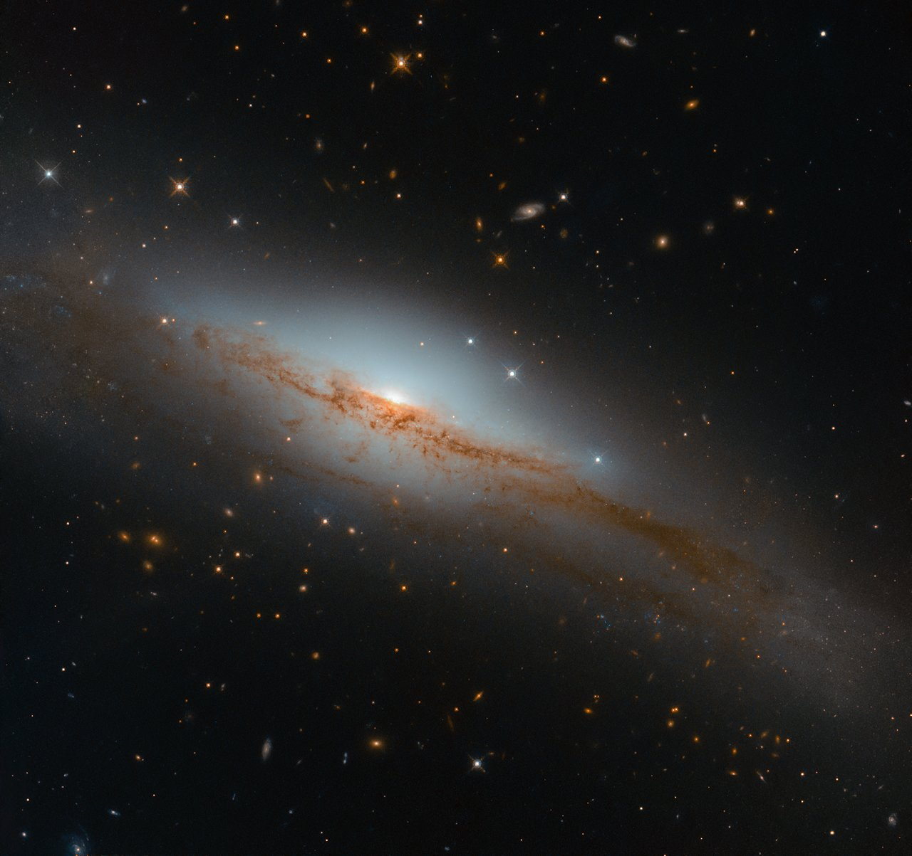

Starlight is the electromagnetic radiation emitted by stars, produced by nuclear fusion in their interiors and radiated from their photospheres. It spans the electromagnetic spectrum from ultraviolet through visible to infrared, though the peak wavelength depends on a star's surface temperature. Starlight is the primary channel through which astronomers learn about the universe beyond the Solar System.

ESA/Hubble & NASA, D. Rosario et al.
The spectrum of starlight
Stars approximate blackbodies: their spectra follow a smooth Planck distribution whose peak shifts with temperature according to Wien's displacement law. The Sun, at roughly 5,778 K, peaks near 500 nm in the green-yellow. Hot O-type stars (above 33,000 K) peak in the ultraviolet, while cool M-type stars (2,300–3,900 K) peak in the infrared. The total power radiated scales as the fourth power of temperature (the Stefan-Boltzmann law), so a star twice as hot but the same size radiates 16 times more energy.
Superimposed on this smooth continuum are spectral lines. A hot, dense source produces a continuous spectrum. Hot, low-density gas produces bright emission lines at specific wavelengths. When cooler gas lies in front of a hotter source, it absorbs those same wavelengths and produces dark absorption lines. Most stellar spectra are of this last type, with hundreds of dark Fraunhofer lines crossing the continuum.
What starlight reveals
Each chemical element produces a unique pattern of spectral lines, like a fingerprint. By matching absorption lines in starlight to laboratory spectra, astronomers identify the elements in a star's atmosphere. In 1925, Cecilia Payne-Gaposchkin used this approach to show that stars are composed overwhelmingly of hydrogen and helium, a result initially doubted but later confirmed.
Beyond composition, starlight encodes surface temperature (through the spectral class), radial velocity (through the Doppler shift of lines), magnetic field strength (through Zeeman splitting), and outflowing winds (through P Cygni line profiles). Combined with distance measurements, these data yield a star's luminosity and radius.
Interstellar effects
As starlight travels through the interstellar medium, dust grains absorb and scatter it. Shorter (blue) wavelengths scatter more than longer (red) wavelengths, so distant stars appear redder than they really are, an effect called interstellar reddening. Elongated dust grains aligned by the Galactic magnetic field also polarise starlight slightly, typically around 1.5% at a distance of 1,000 parsecs.